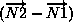
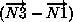
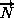
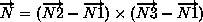

3. Conventions¶
3.1. Data Structure Notation Conventions¶
3.2. Structured Grid Notation and Indexing Conventions¶
3.3. Unstructured Grid Element Numbering Conventions¶
3.3.1. 1-D (Line) Elements¶
1-D elements represent geometrically a line (or bar).
The linear form, BAR_2, is composed of two nodes at each extremity
of the line.
The quadratic form, BAR_3, has an additional node located at
the middle of the line.
The cubic form of the line, BAR_4, contains two nodes
interior to the endpoints.
The quartic form of the line, BAR_5, contains three nodes
interior to the endpoints.


3.3.2. 2D (Surface) Elements¶
2-D elements represent a surface in either 2-D or 3-D space. Note that in physical space, the surface need not be planar, but may be curved. In a 2-D mesh the elements represent the cells themselves; in a 3-D mesh they represent faces. CGNS supports two shapes of 2-D elements - triangles and quadrangles.
The normal vector of a 2-D element is computed using the cross product of a vector from the first to second node, with a vector from the first to third node. The direction of the normal is such that the three vectors (i.e., , , and ) form a right-handed triad.

In a 2-D mesh, all elements must be oriented the same way; i.e., all normals must point toward the same side of the mesh.
3.3.3. 3D (Volume) Elements¶
Six types of triangular elements are supported in CGNS, TRI_3,
TRI_6, TRI_9, TRI_10, TRI_12, and TRI_15.
TRI_3 elements are composed of three nodes located at the
three geometric corners of the triangle.
TRI_6 elements have three additional nodes located at the
middles of the three edges.
The cubic forms of triangular elements, TRI_9 and TRI_10
contain two interior nodes along each edge, and an interior face node
in the case of TRI_10.
The quartic forms of triangular elements, TRI_12 and TRI_15
contain three interior nodes along each edge, and three interior face nodes
in the case of TRI_15.
3.3.3.1. Linear and Quadratic Elements¶

3.3.3.2. Cubic Elements¶